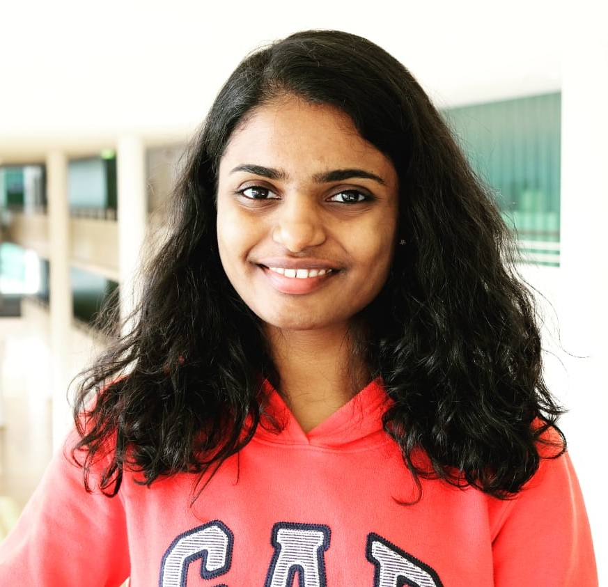

Nikita Surya

Master's in Robotic Systems Engineering at RWTH Aachen University, Germany
Research Assistant at Cybernetics Lab IMA & IfU - RWTH Aachen University
Passionate about Machine Learning, Computer Vision and the math behind optimisation.
Let's Connect!
LinkedIn
-
Medium
-
GitHub
-
Email
DOWNLOAD MY FULL RESUME